Artikel Tentang OKumura Rin
"Sebagaimana telah diberitakan sebelumnya, bahwasanya komik karya Kazue Kato,Blue Exorcist akan hadir kembali dalam bentuk anime pada bulan Januari tahun 2017 mendatang.Dengan judul Ao no Exorcist: Kyoto Fujo O-hen (Blue Exorcist: Kyoto Impure King Arc),anime terbaru ini akan mengetengahkan lakon “Kyoto Impure King” yang merupakan lakon yang dimulai pada komik edisi kelimanya".
Berikut adalah jajaran Seiyuunya:
Nobuhiko Okamoto sebagai Rin Okumura
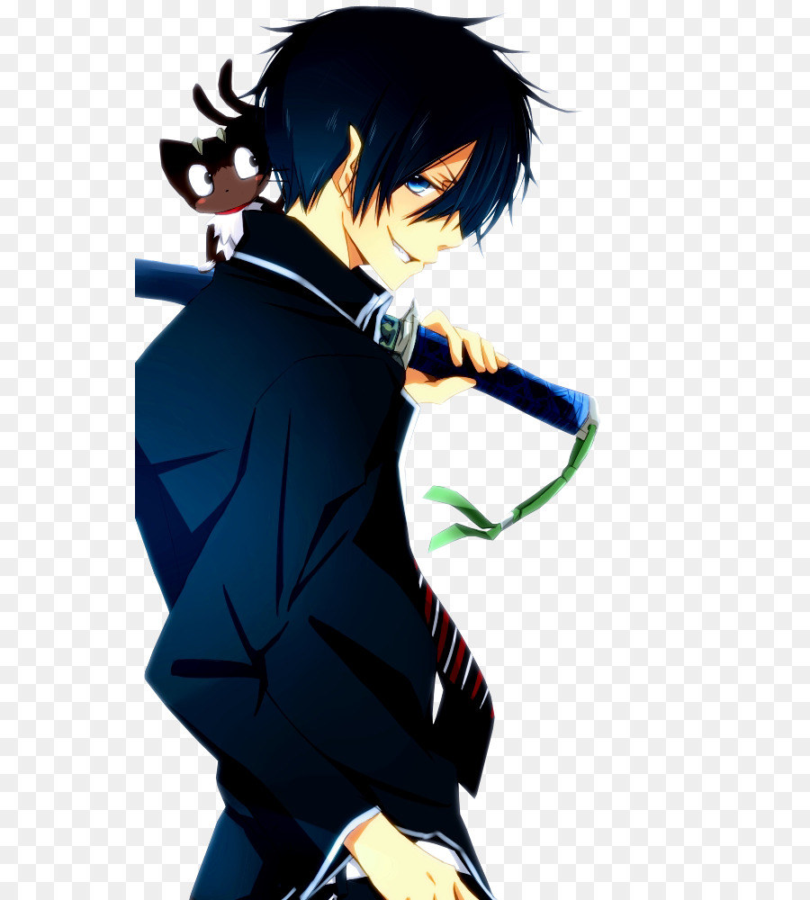
Jun Fukuyama sebagai Yukio Okumura
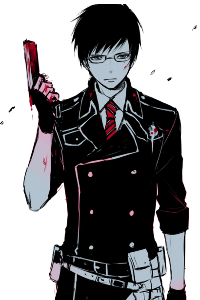
Kana Hanazawa sebagai Shiemi Moriyama
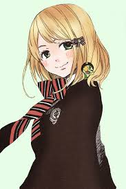
Kazuya Nakai sebagai Ryuji Suguro
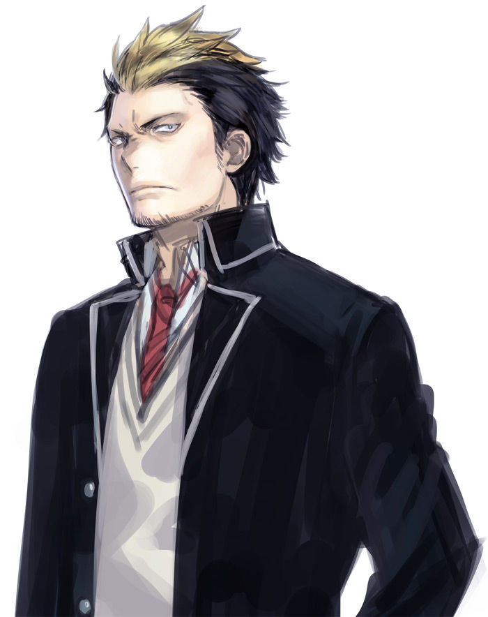
Koji Yusa sebagai Renzo Shima
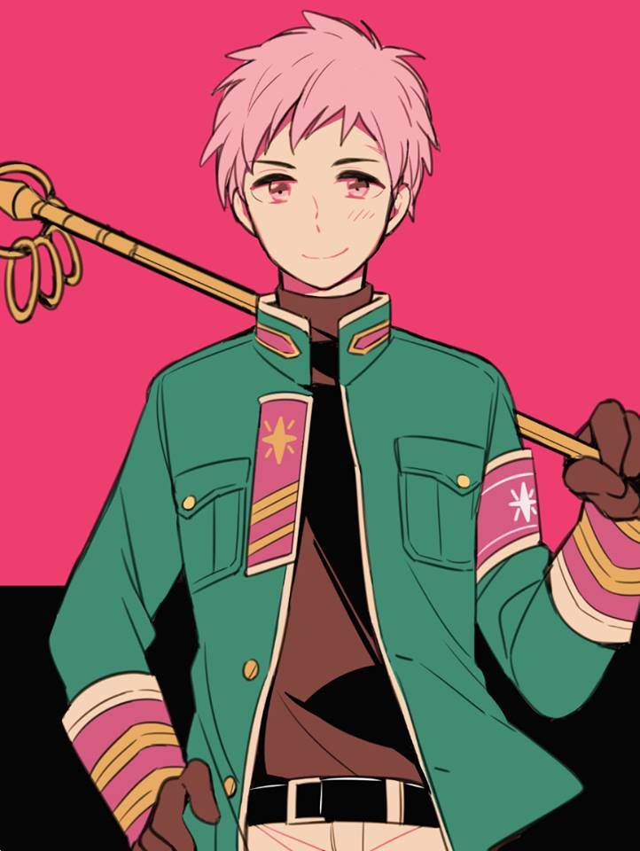
Yuuki Kaji sebagai Konekomaru Miwa
Eri Kitamura sebagai Izumo Kamiki
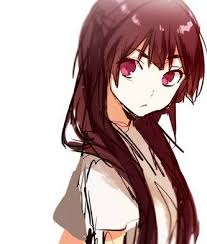
Ayahi Takagaki sebagai Kuro
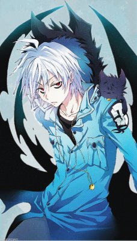
Rina Satou sebagai Shura Kirigakure
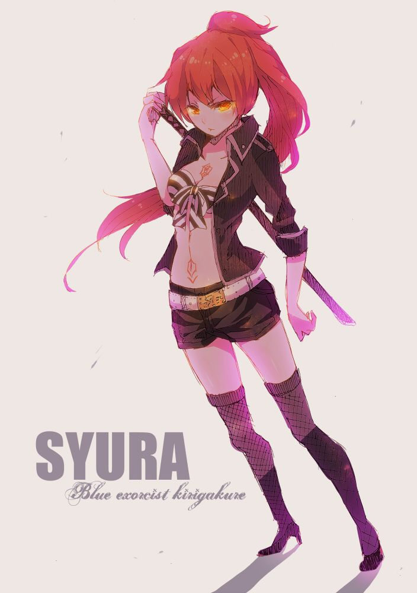
Hiroshi Kamiya sebagai Mephisto Pheles
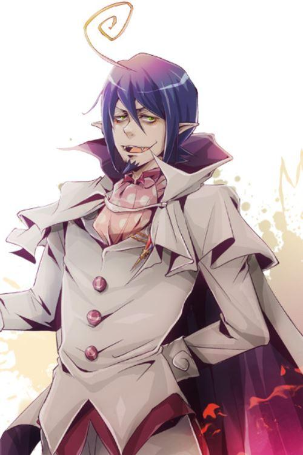
Keiji Fujiwara sebagai Shiro Fujimoto
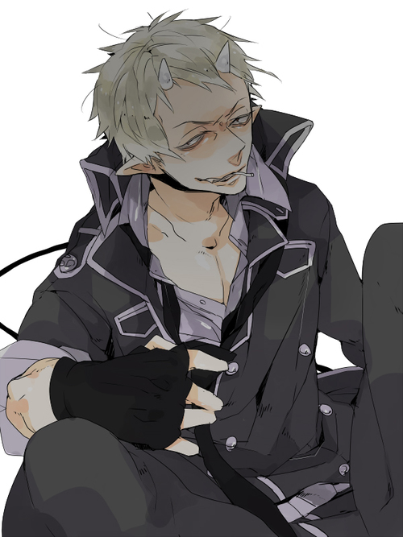
Takashi Inagaki sebagai Tatsuma Suguro
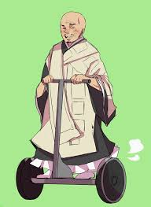
Katsuyuki Konishi sebagai Juzo Shima
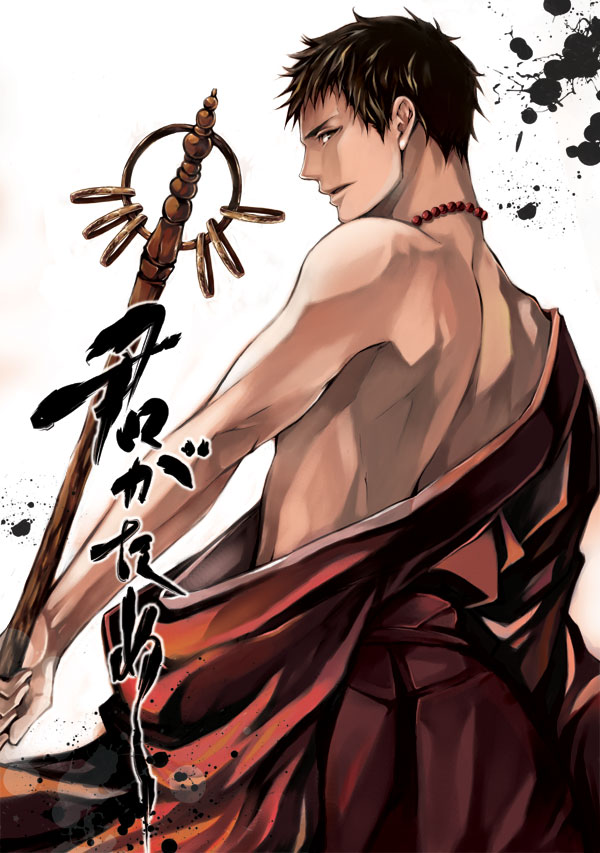
Kisho Taniyama sebagai Kinzo Shima
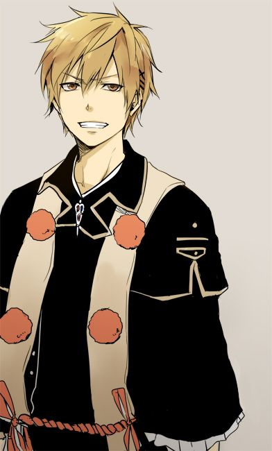
M.A.O sebagai Mamushi Hojo
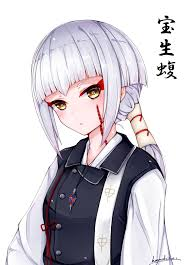
Kazuhiro Yamaji sebagai Saburota Todo
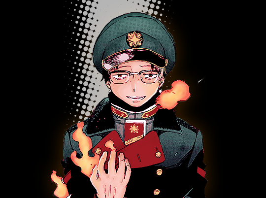
"Koichi Hatsumi akan bertindak sebagai sutradara. Toshiya Ono akan menangani naskah, dan Keigo Sasaki akan menangani desain karakter. Selain itu Hiroyuki Sawano akan menangani musiknya, dengan didampingi oleh Kohta Yamamoto".
Berikut adalah sinopsisnya:
“Akhir zaman Edo, sesosok iblis yang dikenal sebagai Raja yang tiada suci telah membunuh ribuan nyawa tiada berdosa. Beruntung sang iblis bisa dikalahkan oleh Ksatria Salib Sejati yang kemudian menyimpan mata kiri sang iblis. Namun seseorang telah mencuri mata tersebut! Seakan belum lengkap, sang pencuripun juga menculik anak kecil sebagai sandera. Demi menghentikan angkara murka sang penjahat, kini sang pahlawan Yukio dan Rin harus bergegas ke Kyoto, yang pada akhirnya melibatkan mereka pada sebuah skenario besar yang menakutkan! Akankah mereka akhirnya bisa melalui ini semua? Akankah latar belakang Rin sebagai anak iblis akan menjadi masalah bagi kekompakan pahlawan kita?”

"Dikenal di Jepang sebagai Ao no Exorcist, Blue Exorcist bercerita mengenai Rin Okumura yang mendapati dirinya adalah seorang anak setan. Sebuah tragedi dalam hidupnya akhirnya mengantarkan dirinya menjadi seorang exorcist atau pembasmi setan berbekal dengan kekuatan yang dimilikinya. Diserialisasikan di Jepang melalui Jump Magazine sejak tahun 2009, Ao no Exorcisttelah diadaptasi menjadi anime melalui A-1 Pictures pada tahun 2011 lalu. Komik ini sendiri telah diterbitkan di Indonesia melalui penerbit m&c!
Mari kita lihat Short Movie nya berikut ini: